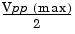

VOLTage
:HIGH {<voltage>|MINimum|MAXimum}
:HIGH? [MINimum|MAXimum]
:LOW {<voltage>|MINimum|MAXimum}
:LOW? [MINimum|MAXimum]
Set the high or low voltage levels. For all functions, the default high level is +50 mV and the default low level is -50 mV. MIN selects the most negative voltage level for the selected function and MAX selects the largest voltage level. The :HIGH? and :LOW? queries return the high and low levels, respectively.
· Limits Due to Amplitude: You can set the voltage levels to a positive or negative value with the restrictions shown below. Vpp is the maximum peak-to-peak amplitude for the selected output termination (10 Vpp for a 50-ohm load or 20 Vpp for a high-impedance load).
Vhigh - Vlow < Vpp (max) and Vhigh, Vlow < 
If the specified level is not valid, the function generator will automatically adjust it to the maximum voltage allowed. From the remote interface, a "Data out of range" error will be generated and the level will be adjusted as described.
· You can set the levels to a positive or negative value, but note that the high level must always be greater than the low level. If you specify a low level that is greater than the high level, the function generator will automatically set the low level to be 1 mV less than the high level. From the remote interface, a "Data out of range" error will be generated and the level will be adjusted as described.
· Note that when you set the high and low levels, you are also setting the amplitude of the waveform. For example, if you set the high level to +2 volts and the low level to -3 volts, the resulting amplitude is 5 Vpp (with an offset voltage of -500 mV).
· Limits Due to Output Termination
: If you change the output termination setting, the displayed voltage levels will be automatically adjusted (and no error will be generated). For example, if you set the high level to +100 mVdc and then change the output termination from 50 ohms to "high impedance", the voltage displayed on the function generator's front-panel will double
to +200 mVdc. If you change from "high impedance" to 50 ohms, the displayed voltage will drop in half. See the
OUTP:LOAD command on page
163 for more information.
· To invert the waveform relative to the offset voltage, you can use the OUTP:POL command.
See page 164 for more information.